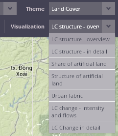
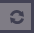

The menu provides a possibility to select a visualization from the list of predefined visualizations. For each theme, the list of visualizations is unique .

In case you customize a visualization (via chart or map modification) and then you need to get to default one, you can use the "reload" button  located to the right of the visualization title.